Fusion Fix Wiki
Introduction#
Welcome to the unofficial Fusion Fix Wiki! The goal of this page is to highlight and keep track of as many Fusion Fix features for Grand Theft Auto: IV as possible.
Fusion Fix fixes and improves so many things in GTA IV, that it can be hard to keep up with what exactly the mod does. I'll try my best to provide as much information about as many changes as I can via this page.
Rain#
Rain on PC was made almost invisible, rain streaks became shorter at higher frame rates and rain droplets on screen became pitch black and lost their refraction effect from console.
Fusion Fix makes rain much more visible, fixes rain streaks so they stay the same size regardless of frame rate and it makes rain droplets coloured again, as well as restoring the refraction effect.

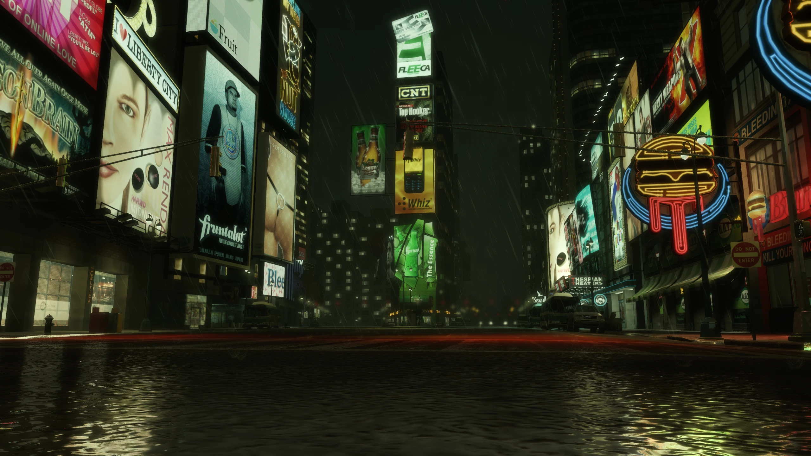
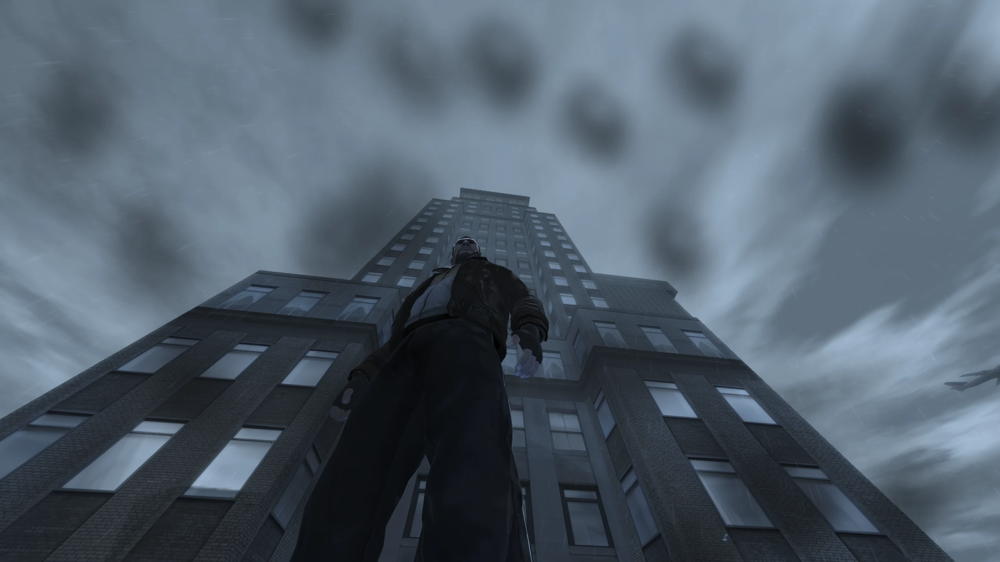

Reflections#
Reflections were toned down significantly on PC, vehicle reflections became jagged due to a bug and mirror reflections became distorted at certain camera angles.
Fusion Fix restores the stronger console reflections, fixes the bug which made vehicle reflections jagged, and it fixes mirrors so they no longer become distorted at certain camera angles.

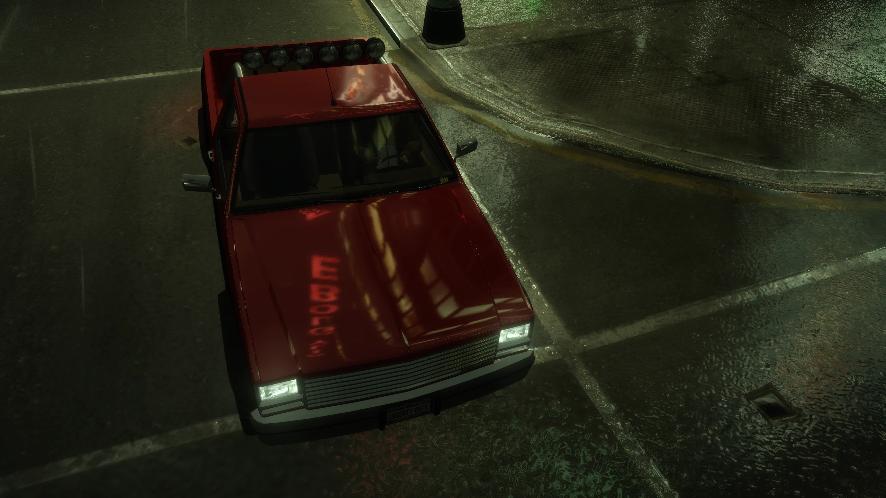


Shadows#
Shadows were by far the most broken aspect of the game
After patch 1.0.6.0, they had horrible filtering, suffered from peter panning, had their draw distance reduced, performed significantly worse than the original shadows implementation and had many other issues.
Fusion Fix completely replaces the filtering and bias code, adds support for animated tree shadows, adds contact hardening shadows and it also fixes dozens of other bugs related to shadows in general.
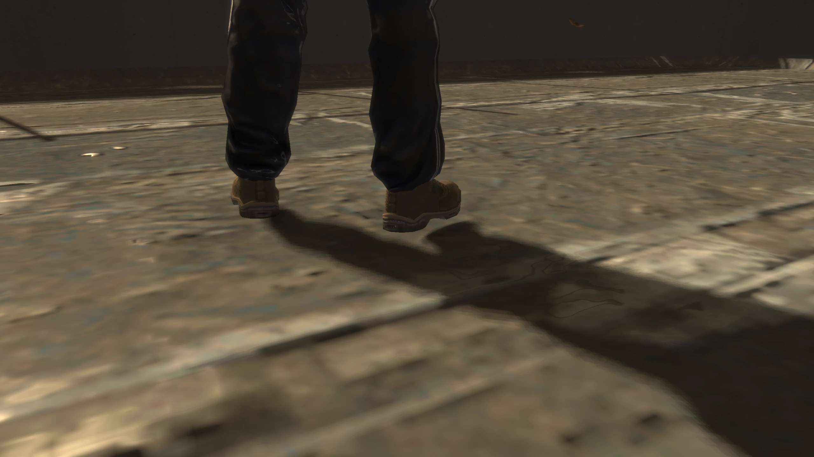


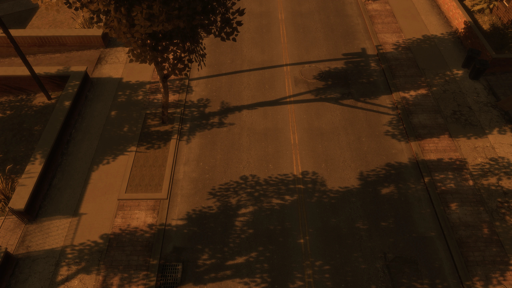

Z-Fighting#
The PC port of Grand Theft Auto IV was plagued with z-fighting not seen on other platforms.
Fusion Fix fixes this so z-fighting is basically nonexistent.
Object Fading#
The 1.0.6.0 update for PC broke several graphical effects, one of them being screen door transparency in many materials, which led to the loss of LOD fade/blending. Terrain fading was also missing on ALL PC versions.
Fusion Fix restores this functionality from previous versions so fading now works again, and it also restores terrain fading from the console versions of the game.
Definition#
GTA IV's PC port has an odd "Definition" option which ENABLES graphical effects when OFF, and DISABLES them when ON. One effect is a blur filter which hides this pixel pattern effect as objects fade, but the blur is WAY stronger on PC due to leftover anti-aliasing code. This basically blurs the entire image.
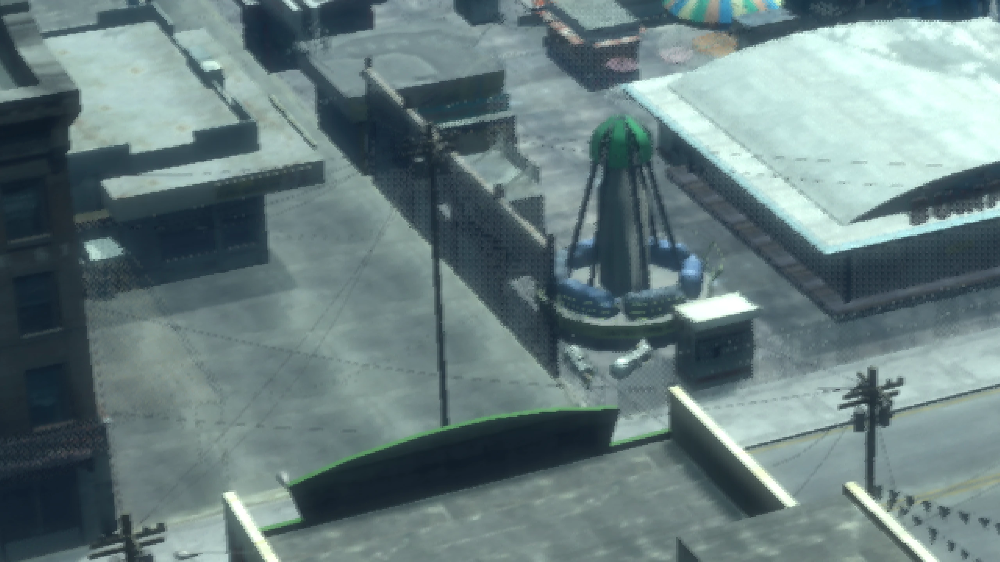


Fusion Fix removes this broken anti-aliasing code and makes it so the blur filter only applies to objects as the pixel pattern effect occurs when "Definition" is on, rather than applying to the entire screen when it's off, this means Fusion Fix provides a sharper and cleaner image than seen on any other platform.
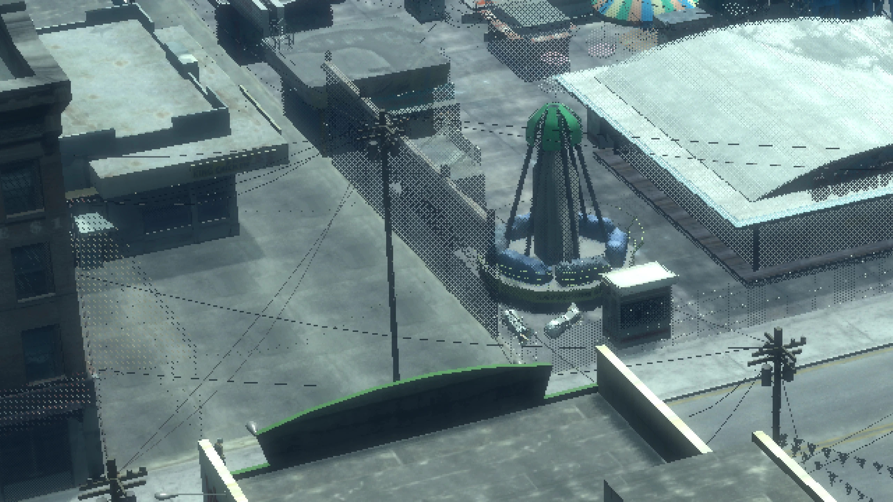
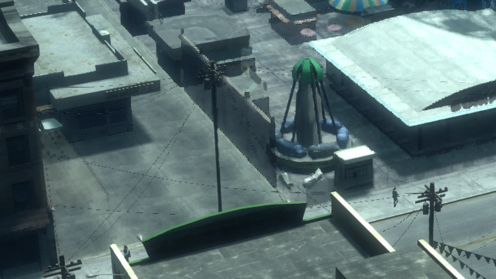
Depth-of-Field#
GTA IV's depth of field effect doesn't scale correctly with resolution and it only looks correct at 720p like on consoles. Depth of field is also tied to the games "Definition" option.
Fusion Fix fixes the scaling by implementing an efficient bokeh blur rated up to 4K, and added an individual depth of field option separate from the "Definition" option. This allows you to not only toggle depth of field, but also control how strong it is during gameplay.
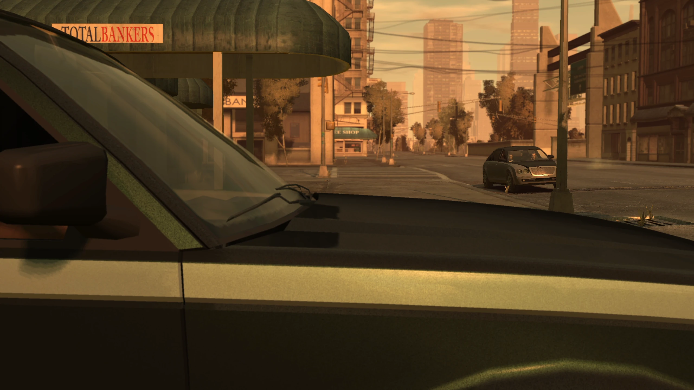

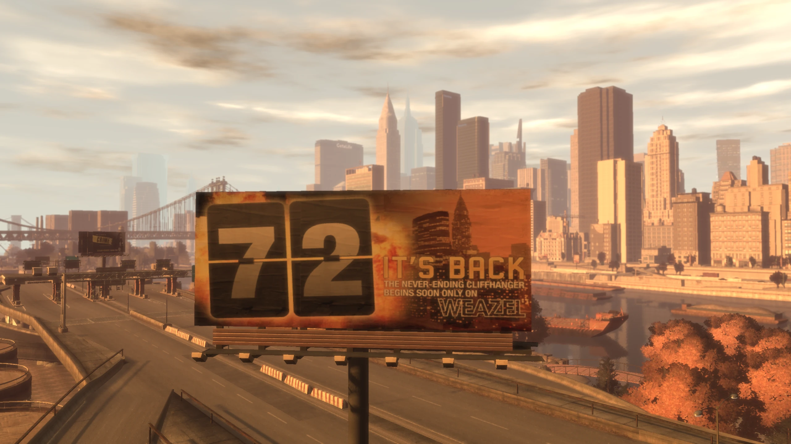
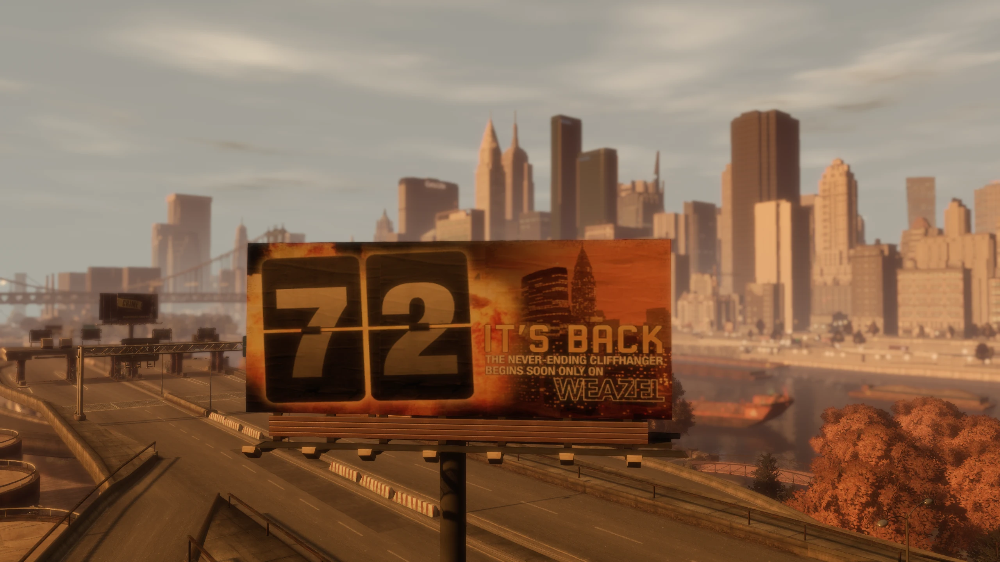
Anti-Aliasing#
The Xbox 360 version of GTA IV ran at 1280x720 with 2x MSAA. Meanwhile the PC version lacked any anti-aliasing whatsoever.
Fusion Fix implements FXAA and SMAA, which are simple and performance friendly, and do an excellent job at smoothing out jagged edges, especially at high resolutions.

Volumetric Fog#
Fusion Fix adds a very nice volumetric fog shader to replace the games aging fog shader. This allows the draw distance to be massively increased, it hides the edge of the game world and fog no longer moves with the camera like it did in the vanilla game.


Sun Shafts#
The sun in GTA IV is pretty effectless in comparison to every other 3D GTA game. So Fusion Fix adds an option for sun shafts/godrays, a nice effect that simulates light rays coming from the sun.
Improved Loading Times#
GTA IV on PC has an unskippable intro and it takes you to a main menu first instead of just loading your last save immediately like console.
Fusion Fix adds a skip intro and skip menu option in the GAME menu, as well as improving overall load times. This significantly reduces how long it takes to get in-game.
Seasonal Events#
Fusion Fix adds seasonal events to the game which includes snow at winter and a scarier atmosphere at Halloween. The snow effect is done almost entirely using shaders instead of replacing map textures, similar to GTA Online's yearly snow event. You can toggle this feature in the GAME menu.

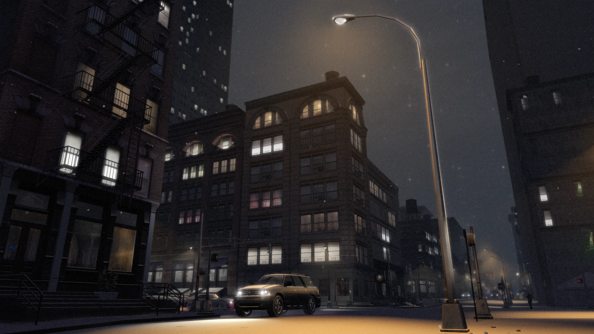
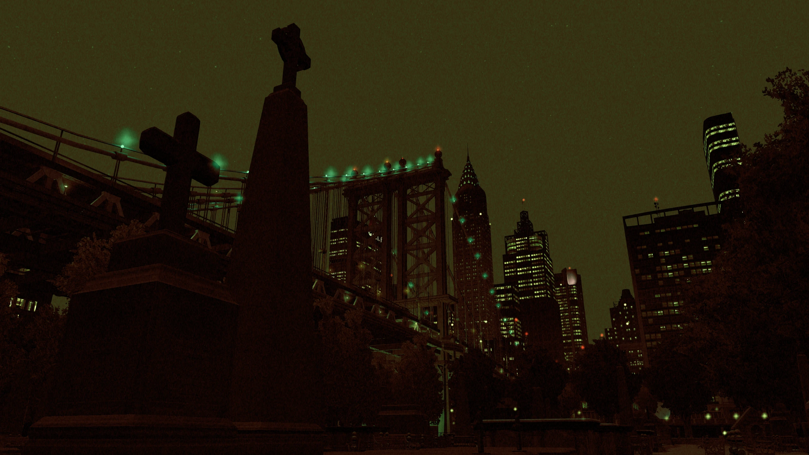
Fusion Overloader#
Fusion Fix adds a type of Modloader called Fusion OverLoader, you don’t really need to know too much about it for this guide. But if you do plan on installing more mods in the future, I’d recommend checking out my Fusion Overloader tutorial once you're done with this guide.
We'll be installing all our mods through Fusion Overloader in this guide, so you'll see how easy it is soon.
Even more...#
If you want to know what else Fusion Fix fixes or adds to the game, you can either check out the full changelog on the Fusion Fix GitHub or you can watch my video covering nearly the entirety of the mod.
Enjoy my work?
Gain benefits such as shout-outs at the end of videos, early access to TJGM videos, early access to TJGM mods, VIP Discord access and much more by supporting me and my work on Patreon, it's very much appreciated! ❤️
⭐ Support on Patreon